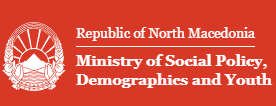

Results Framework · Monitoring Dashboard
Youth Strategy Indicators 2023–2027
ENG
MK
ALB
United Nations Resident Coordinator Office in North Macedonia (UN RCO)
Baseline – Interim Targets – Final Targets